Project 3
PLC Programming for Automating Industrial Processes using AB Rockwell Automation & Siemens
MOTIVATIOIN:
I was always inclined towards advanced manufacturing techniques and industrial automation. But there were very few courses
offered in my engineering studies that focused on developing practical skills. There are rarely any courses in universities
which could expose students to gain hands-on PLC programming.
So, I decided to develop my PLC programming skills on my own by doing online courses with my master of science studies.
I spent my vacation time to build awesome automation projects by implementing my knowledge and learnings acquired during
the courses. This was a crucial step towards augmenting skills in controlling machines, interacting with PLCs and programming equipment
based on the automation requirements/ applications.
SOFTWARE USED:
I used two advanced softwares to write complex PLC pragrams.
1. Allen Bradley Rockwell Automation RX Logix 500 programming package
2. Siemens TIA Portal Step 7 WinCC PLC HMI package
PROGRAMMING LANGUAGES:
I got an opportunity to learn PLC by incorporating all of the 5 IEC languages.
1. LAD: Ladder Logic
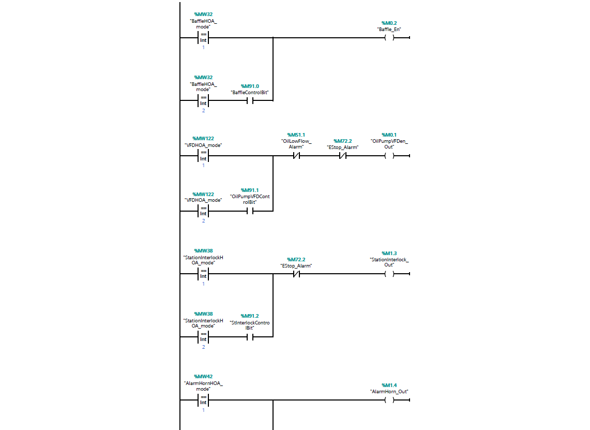
2. FBD: Funtional Block Diagram
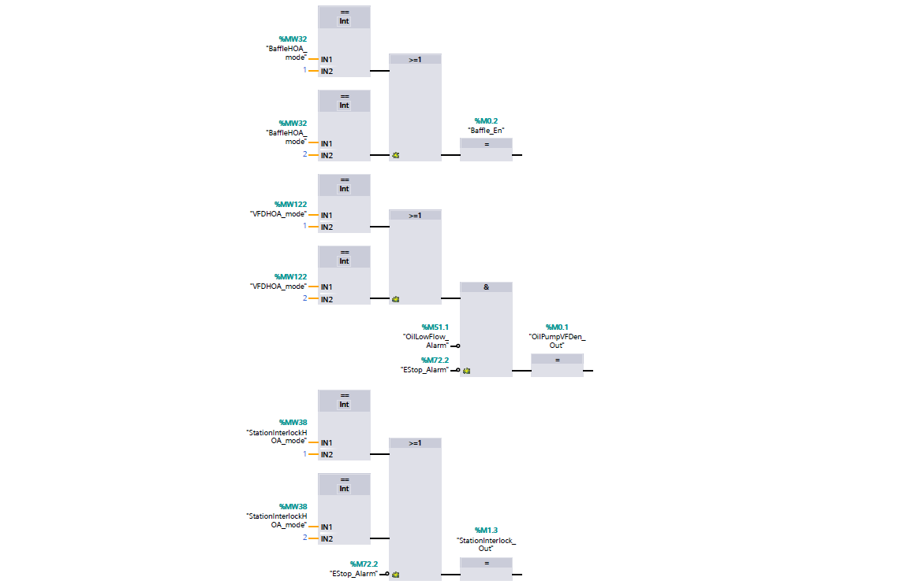
3. SCL: Structured Controlled Language
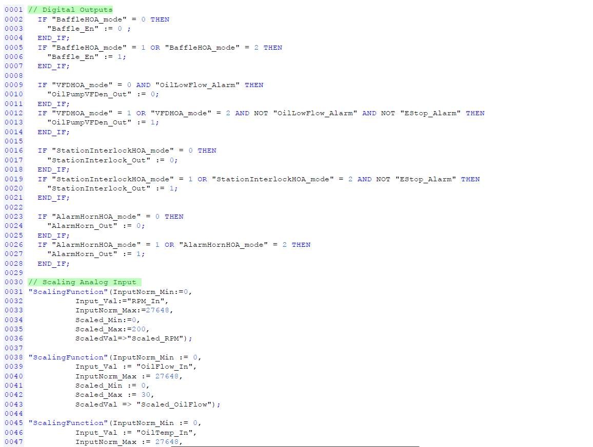
4. STL:Statement List
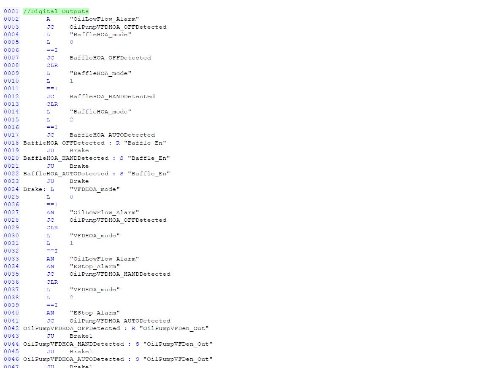
5. GRAPH: Graphical
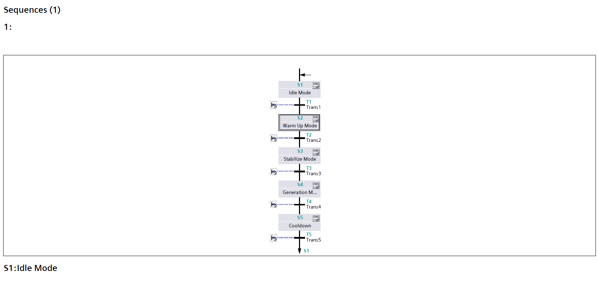
PROJECT LIST:
I coded multiple PLC programs to solve industrial challenges and automate processes for enhancing productivity using
RSLogix & Siemens. The applications include:
1. Digital Control Logic for maintaining the pressure in a receiver on a compressor application.
2. Digital Filling station for a conveyor belt carrying boxes with colored labels.
3. Inventory Management using the barcode scanner for the raw materials.
4. Multipurpose Servo Application for a modular water treatment system.
5. Digital Rotameter for measuring oil flowing through a pipeline.
6. Hour meter to track the runtime of the host plant.
7. Sensor Calibration for a system measuring gases.
8. PID Substitution Logic for maintaining the vacuum inside a system in spite of a rapidly changing environment.
9. DDE Messaging for storing the current mode and function of a system.
10. Pump Protection with a flow switch and a pressure sensor using alarms and notifications.
11. PLC programming for Hydroelectric Power Plant in Siemens TIA Portal V15 with PLCSIM.
Please feel free to contact me if you would like to see the project files. Just to give you an idea of how it works,
I have mentioned a project below in detail.
Process:
A conveyor belt carries boxes with colored labels to our filling station and beyond. The proximity switch
closes when a box arrives, and either a red or blue photo eye tells us which label is on the box. Red
labeled boxes get filled with pecans and blue labels are for walnuts. A level sensor tells us when the box
is full and ready to send along.
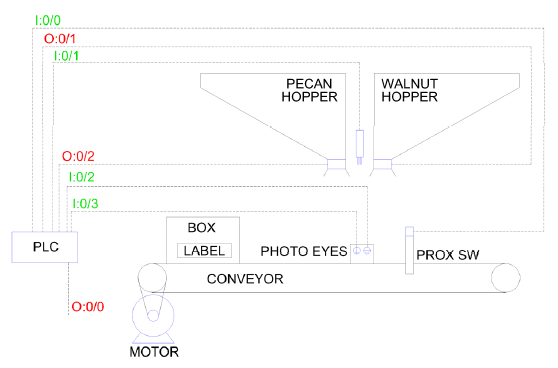
IO / Assigned Memory:
- I:0/0 ‐ Proximity switch (closes when a box is near)
- I:0/1 ‐ Level sensor (closes when the box is full)
- I:0/2 ‐ Red photo eye (closes when a red label is in front of it)
- I:0/3 ‐ Blue photo eye (closes when a blue label is in front of it)
- O:0/0 ‐ Conveyor motor (makes the conveyor move forward when closed)
- O:0/1 ‐ Walnut hopper (when closed, solenoid opens allowing contents to fall from the hopper)
- O:0/2 ‐ Pecan hopper (when closed, solenoid opens allowing contents to fall from the hopper)
Test Criteria:
To start, run the program on Emulate. The conveyor motor should start immediately but both hoppers
should be off.
Next, force only the proximity switch on (closed). The conveyor motor should shut off, and both hoppers
should remain deenergized.
Third, leave the proximity switch switch closed and force the red photo eye on as well. The conveyor
motor and the walnut hopper should remain off, but the pecan hopper should energize.
Fourth, leave the proximity switch closed and force the red photo eye off and the blue photo eye on.
The conveyor motor should remain off, but the pecan hopper should deenergize and the walnut hopper
should energize.
Next step, force the level sensor on. The hoppers should both deenergize and the conveyor should start
back up to move the box forward.
Finally, force the proximity switch, the level sensor and both photo eyes off. Both hoppers should
remain deenergized and the conveyor should keep running.
Bonus test: with the proximity switch and level sensor deenergized, force both photo eyes on. Neither
hopper should energize. (We don’t want to release product when there isn’t a box to catch it in.)
Results:
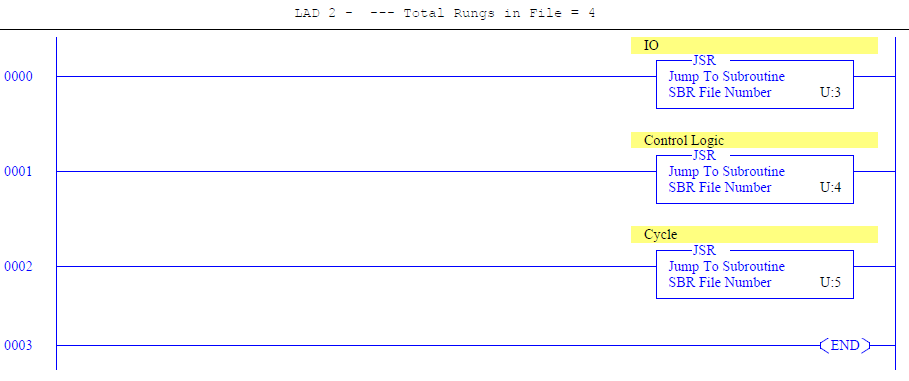
In this ladder, I have defined all the other ladders for Input/ Output, Control Logic & Cycle. This will allow the program to
read these ladders while running. If we do not mention the ladders here in LAD2, the PLC will not read that ladder.
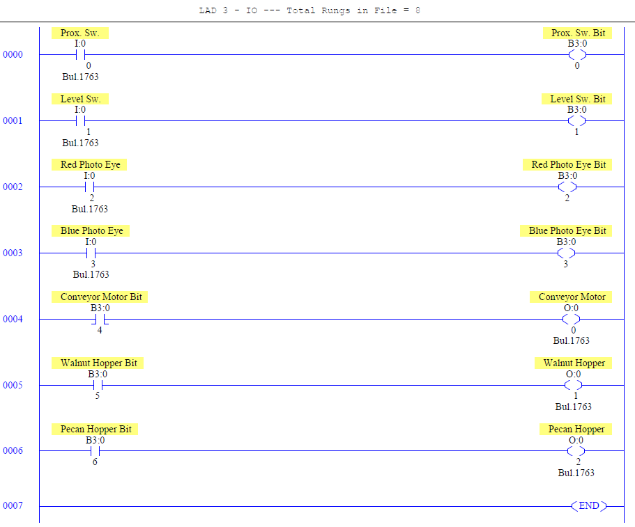
In LAD3, we define all the inputs and outputs. As soon as the input condition get TRUE, it will energize the corresponding output.
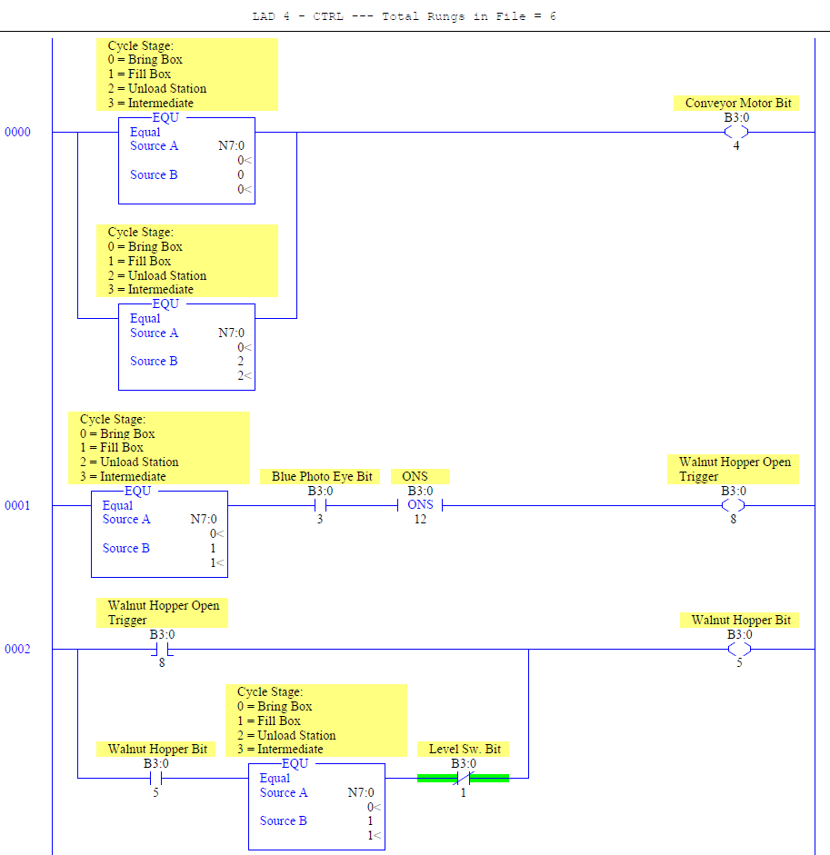
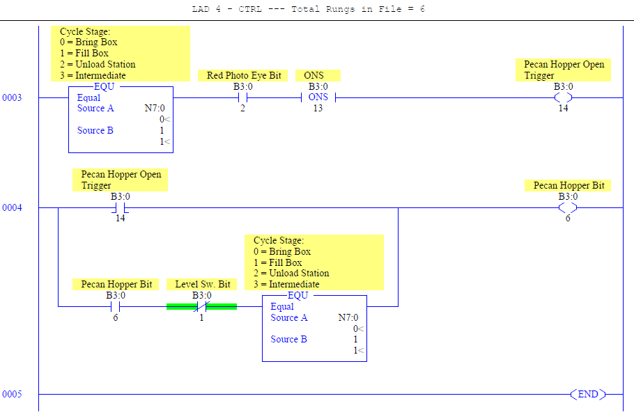
This is the control ladder. It controls all the output bits. For example, B3:0/8 condition gets TRUE/ FALSE, it will energize
a bit, B3:0/5 on this ladder. After this bit energizes/ deenergizes, it goes to the Input/Output ladder. It will read rung 5, will
make B3:0/5 TRUE here, and will energize output, O:0/1.
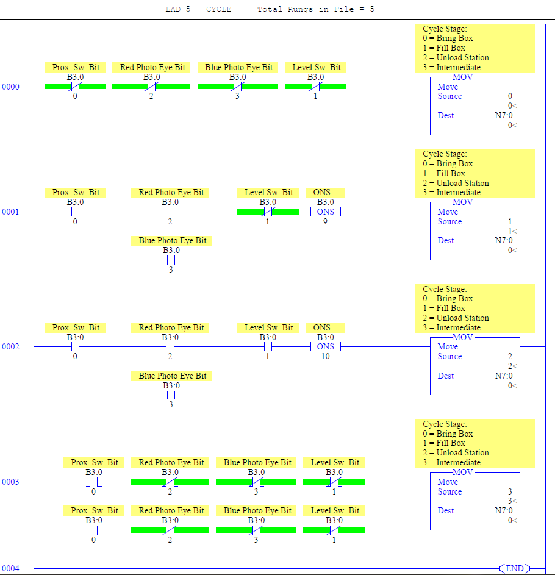
This ladder will help to determine the cycle based on the operations. It can order the machine to bring a box, fill the box and
unload the station after filling it with pecan/walnut. It will also track if the box is in between any of the above mentioned cycles.